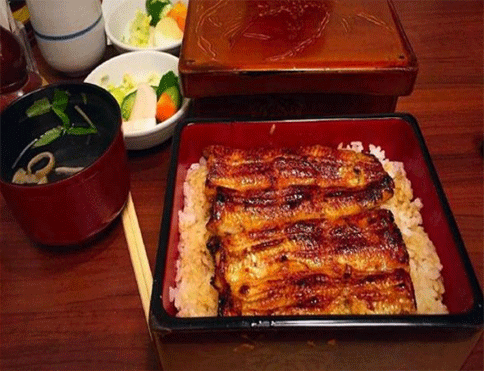
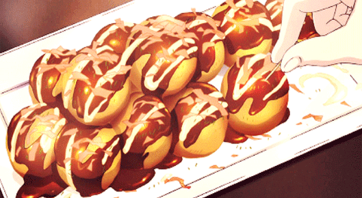
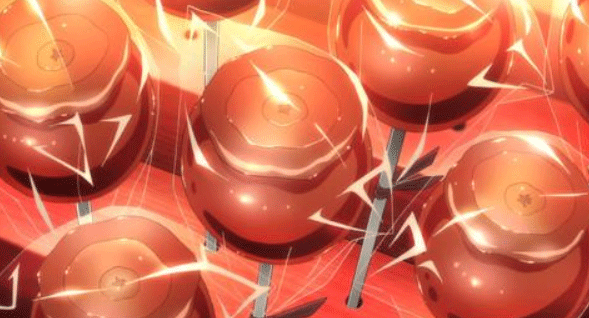
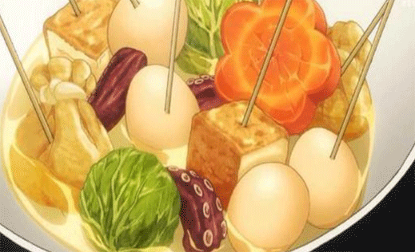

鳗鱼饭在《名侦探柯南》中出现得最多，是元太最喜欢的食物，将蒲烧鳗鱼放在米饭上食用，特别好吃，但是因为野生鳗鱼价格昂贵，让很多人都望尘莫及，在以前只有贵族才能享受野生鳗鱼带来的美味，不过现在也有养殖的鳗鱼啦，在日本分为鳗鱼盒饭与鳗鱼碗饭，区别在于一种用木盒盛放而另一种用瓷碗。

章鱼烧一般在外面的小吃摊经常会出现，在中国又叫做章鱼小丸子，现在已经成了日本家喻户晓的国民小吃，章鱼烧皮不仅酥肉嫩、口味繁多和味美价廉外，而且还富含着许多营养，制作的方式并不难只是需要准备些配料，不嫌麻烦的朋友也可以自己在家动手试试哦~

苹果糖在日本的各种祭会，庙会都频繁出现，经常出现在少女的手中。玫瑰色的糖衣加上小苹果，简直像极了可爱少女的脸上害羞起来的腮红，而且苹果的酸甜配上糖衣恰当好处的甜简直绝配，你想想一个盘着简单发髻穿着浴衣的可爱小萝莉拿着这么个小红果果，在夏日祭的烟花下冲你微笑，就是这种感觉，甜不甜！

日本的关东煮在我们国家就如同火锅一样重要，一般在一家晚餐或者朋友在家聚会的时候出现，想要做出好吃的关东煮，汤底是最重要的！原本是用昆布、柴鱼干熬制出的高汤做汤底，到了我们中国做法就直接被入乡随俗了。小宇曾经自己用海带和鱼干做出来的底汤，在里面煮出来的关东煮味道比街上卖得好吃多了！制作方法也不是很复杂，大家没事的时候可以可以试试哦~


吃食网 — 让吃更美！
关于我们 - 联系我们 - 加入我们 - 免责声明 - 我要投稿 - 访客留言
本站提供热销新品、菜品摆盘，别忘了告诉您的朋友哟 ^_^
版权所有 © 2004-2020 吃食网 保留所有权利